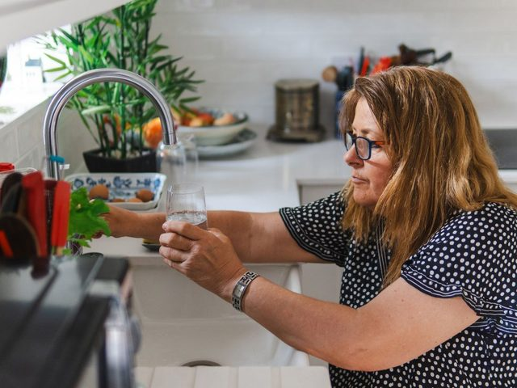
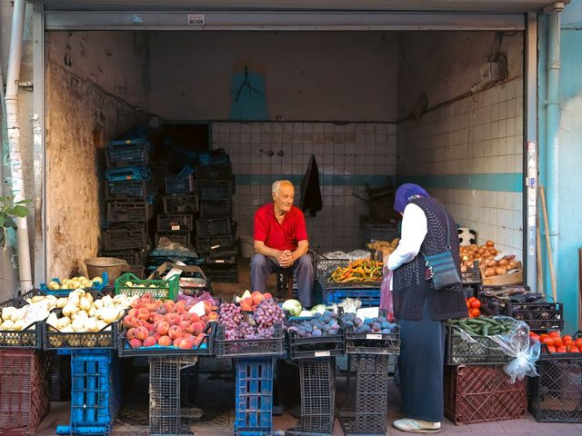
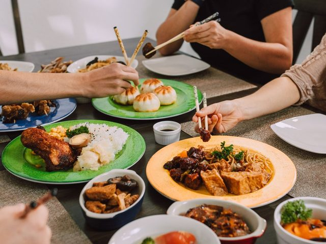

UNIT 38 · VOCABULARY
其他動詞 (4)
Other verbs (4)
54 個單字聽・唸・用
本單元單字一覽
常用動詞第四組，共 54 個（attack 到 welcome）。重點：to V／V-ing、不規則三態、lie 的兩種意思。
attackbecomebeginbelongcallcarecheckdatedealdecidediedownloadenjoyexpectfallfillfindgetgivehappenhidehurtinvitejoinkeepleadletliemeanownplanpleaseprayprepareraisereachsavesellsendshareshowsitsleepstartstaystopthanktreattryuploadvisitwaitwakewelcome
每個字都有 🔊，先聽發音、跟著唸，再看例句。
單字 1–4
⚔️
attack
攻擊v.
The dog attacked the cat.
那隻狗攻擊了貓。
那隻狗攻擊了貓。
🦋
become
成為；變得v.
She wants to become a doctor.
她想成為醫生。
她想成為醫生。
🚦
begin
開始v.
School begins in September.
學校九月開學。
學校九月開學。
🏷️
belong
屬於v.
This red bike belongs to Danny.
這台紅色腳踏車是 Danny 的。
這台紅色腳踏車是 Danny 的。
單字 5–8

call
打電話；稱呼v.
Please call me tonight.
今晚請打電話給我。
今晚請打電話給我。
💗
care
關心；在乎v.
I don't care what others think.
我不在乎別人怎麼想。
我不在乎別人怎麼想。
☑️
check
核對；打勾v.
Check your answers before you hand in the test.
交考卷前檢查你的答案。
交考卷前檢查你的答案。
📅
date
約會；記載日期v.
They have been dating for a year.
他們已經交往一年了。
他們已經交往一年了。
單字 9–12
🧩
deal
處理；應付v.
I have to deal with this problem.
我得處理這個問題。
我得處理這個問題。
🎯
decide
決定v.
I decided to study harder.
我決定要更用功。
我決定要更用功。
🥀
die
死v.
The flowers died because no one watered them.
花枯死了，因為沒人澆水。
花枯死了，因為沒人澆水。
⬇️
download
下載v.
You can download the app for free.
你可以免費下載這個應用程式。
你可以免費下載這個應用程式。
單字 13–16
😌
enjoy
享受；喜歡v.
I enjoy reading in my free time.
我空閒時喜歡看書。
我空閒時喜歡看書。
🤞
expect
期待；預期v.
I didn't expect to see you here.
我沒想到會在這裡見到你。
我沒想到會在這裡見到你。
🍎
fall
掉落；跌倒v.
The apple fell from the tree.
蘋果從樹上掉下來。
蘋果從樹上掉下來。

fill
裝滿；填v.
Please fill the glass with water.
請把杯子裝滿水。
請把杯子裝滿水。
單字 17–20
🔍
find
找到；發現v.
Did you find your keys?
你找到鑰匙了嗎？
你找到鑰匙了嗎？
🎁
get
得到；到達；變得v.
How can I get to the station?
我要怎麼到車站？
我要怎麼到車站？
🤲
give
給v.
Give me your hand.
把手給我。
把手給我。
❗
happen
發生v.
What happened to you?
你發生什麼事了？
你發生什麼事了？
單字 21–24

hide
躲藏；隱藏v.
The cat is hiding under the bed.
貓躲在床底下。
貓躲在床底下。
🤕
hurt
受傷；痛v.
My leg hurts.
我的腳好痛。
我的腳好痛。
💌
invite
邀請v.
They invited me to dinner.
他們邀請我吃晚餐。
他們邀請我吃晚餐。
🙋
join
參加；加入v.
Do you want to join the basketball team?
你想加入籃球隊嗎？
你想加入籃球隊嗎？
單字 25–28
🔒
keep
保持；持續v.
Keep the door closed, please.
請讓門保持關著。
請讓門保持關著。
🧭
lead
領導；帶領v.
This road leads to the beach.
這條路通往海灘。
這條路通往海灘。
🙆
let
讓v.
Let me help you.
讓我幫你。
讓我幫你。
🤥
lie
說謊；躺v.
Don't lie to me. Tell me the truth.
不要對我說謊，告訴我實話。
不要對我說謊，告訴我實話。
單字 29–32
❓
mean
意思是v.
What does this word mean?
這個字是什麼意思？
這個字是什麼意思？
🔑
own
擁有v.
He owns three cars.
他擁有三輛車。
他擁有三輛車。
🗺️
plan
計畫v.
We are planning a trip to Japan.
我們正在計畫去日本旅行。
我們正在計畫去日本旅行。
😊
please
使高興；請v.
It's hard to please everyone.
要讓每個人都滿意很難。
要讓每個人都滿意很難。
單字 33–36
🙏
pray
祈禱v.
People pray for good luck at the temple.
人們在廟裡祈求好運。
人們在廟裡祈求好運。
📚
prepare
準備v.
I'm preparing for the test.
我正在準備考試。
我正在準備考試。

raise
舉起；提高；養育v.
Raise your hand if you have a question.
有問題請舉手。
有問題請舉手。
⛰️
reach
到達；伸手拿到v.
We reached the top of the mountain at noon.
我們中午到達山頂。
我們中午到達山頂。
單字 37–40
🐷
save
拯救；節省；存v.
Taking the bus can save you some money.
搭公車可以幫你省一些錢。
搭公車可以幫你省一些錢。

sell
賣v.
They sell fruit at the market.
他們在市場賣水果。
他們在市場賣水果。
📨
send
寄；送v.
I sent her a birthday card.
我寄了一張生日卡給她。
我寄了一張生日卡給她。

share
分享v.
Good friends share things with each other.
好朋友會彼此分享。
好朋友會彼此分享。
單字 41–44
📱
show
顯示；給…看v.
Can you show me your new phone?
可以給我看你的新手機嗎？
可以給我看你的新手機嗎？
sit
坐v.
Please sit down.
請坐下。
請坐下。

sleep
睡覺v.
I usually sleep eight hours a night.
我通常每晚睡八小時。
我通常每晚睡八小時。
▶️
start
開始v.
It started to rain.
開始下雨了。
開始下雨了。
單字 45–48
🏨
stay
停留；待v.
We stayed at a hotel near the beach.
我們住在海灘附近的旅館。
我們住在海灘附近的旅館。
🛑
stop
停止v.
Stop talking, please.
請停止講話。
請停止講話。
🙏
thank
謝謝v.
Thank you for your help.
謝謝你的幫忙。
謝謝你的幫忙。
🫶
treat
對待；請客v.
She treats me like a sister.
她把我當妹妹一樣對待。
她把我當妹妹一樣對待。
單字 49–52
💪
try
嘗試；努力v.
Try to do your best.
盡力去做。
盡力去做。
⬆️
upload
上傳v.
I uploaded the photos to the Internet.
我把照片上傳到網路上。
我把照片上傳到網路上。
🏛️
visit
參觀；拜訪v.
We visited the museum last Sunday.
我們上星期天參觀了博物館。
我們上星期天參觀了博物館。

wait
等待v.
Please wait for me here.
請在這裡等我。
請在這裡等我。
單字 53–54

wake
醒來；叫醒v.
Mom wakes me up every morning.
媽媽每天早上叫我起床。
媽媽每天早上叫我起床。
🎊
welcome
歡迎v.
Welcome to our school!
歡迎來到我們學校！
歡迎來到我們學校！
不規則動詞三態
| 原形 | 過去式 | 過去分詞 |
|---|---|---|
| become | became | become |
| begin | began | begun |
| fall | fell | fallen |
| find | found | found |
| give | gave | given |
| hide | hid | hidden |
| keep | kept | kept |
| lead | led | led |
| sell／send | sold／sent | sold／sent |
| sit／sleep | sat／slept | sat／slept |
| wake | woke | woken |
hurt、let 三態都一樣。
to V 還是 V-ing
| 接法 | 動詞 | 例句 |
|---|---|---|
| V-ing | enjoy、keep | I enjoy swimming. Keep trying! |
| to V | decide、expect、plan | I decided to go. |
| 兩種都可以 | begin、start | It began to rain. ＝ It began raining. |
| 意思不同 | stop、try | stop eating 停止吃；stop to eat 停下來去吃 |
lie 的兩種意思
| 意思 | 三態 | 例句 |
|---|---|---|
| 說謊 | lie／lied／lied | He lied to me. |
| 躺 | lie／lay／lain | He lay on the sofa. |
V-ing 都是 lying。
快問快答：中文 → 英文
1攻擊attack
2屬於belong
3核對；打勾check
4決定decide
5享受；喜歡enjoy
6裝滿；填fill
7給give
8受傷；痛hurt
快問快答：英文 → 中文
1keep保持；持續
2lie說謊；躺
3plan計畫
4prepare準備
5save拯救；節省；存
6share分享
7sleep睡覺
8stop停止
學完了！接下來
複習方法
review
- 回到「📗 單字卡」，按「遮中文」自己考自己
- 再按「遮英文」，看中文說出英文
- 每個例句跟著 🔊 唸一次
準備好了
- 按右上角「📝 前往測驗」
- 測驗錯的題目要訂正到全對
- 訂正完成補送 1 點